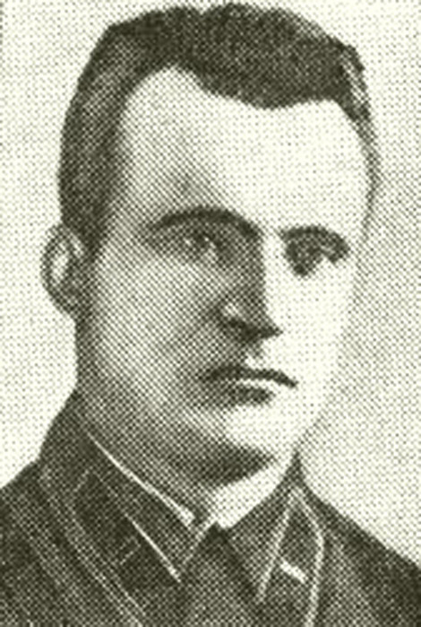

Каданчик Сергей Николаевич

Каданчик Сергей Николаевич (12 сентября 1906 — 15 сентября 1943) — советский офицер, командир 1339-го стрелкового полка 318-й дивизии 18-й армии, подполковник. Участник Великой Отечественной войны, Герой Советского Союза. Родился в 1906 году в деревне Моисеевичи, ныне Осиповичского района Могилёвской области Республики Беларусь в крестьянской семье. Белорус. Образование: гражданское — начальная школа, военное — Киевские объединённые курсы подготовки командиров РККА (1932 год). Член ВКП(б)/КПСС с 1939 года. В Красной Армии с 1928 года. Участник Советско-финской войны (1939—1940 гг). В боях Великой Отечественной войны с 22 июня 1941 года. Участник Новороссийской операции. В ночь на 10 сентября 1943 года 1339-й стрелковый полк 318-й дивизии 18-й армии подполковника Каданчика С. Н. участвовал в морском десанте в Цемесской бухте в районе электростанции и цементного завода «Красный Октябрь». Катер, на котором находился командир полка, был подбит огнём противника и затонул. Сам Каданчик С. Н. с частью бойцов был спасён экипажем другого катера, возвращавшимся после высадки десантников в Геленджик. Командование полком на месте высадки взял на себя начальник штаба полка Ковешников Д. С. На позицию, удерживаемую полком, Каданчик С. Н. смог попасть только спустя полдня. Тяжёлые бои длились неделю — 16 сентября 1943 года порт и город Новороссийск были полностью освобождены. Накануне, 15 сентября 1943 года Сергей Николаевич Каданчик погиб на наблюдательном пункте от прямого попадания вражеского снаряда. 18 сентября 1943 года указом Президиума Верховного Совета СССР С. Н. Каданчику присвоено звание Героя Советского Союза (посмертно).
На главную